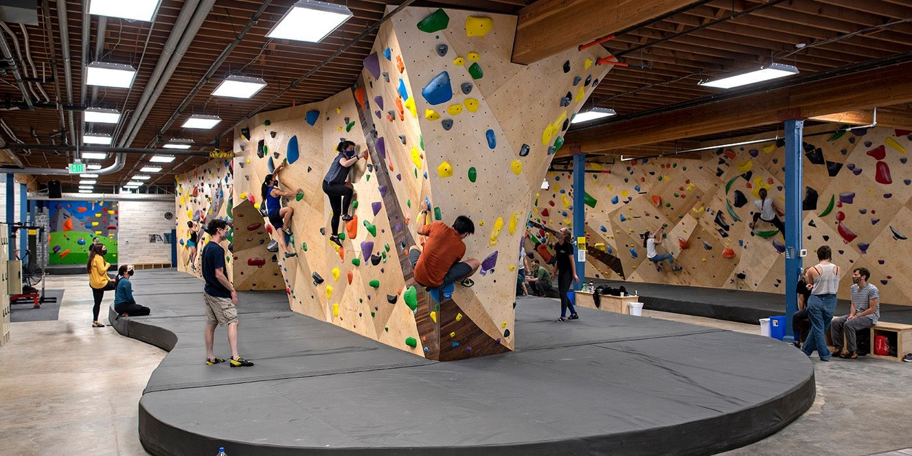
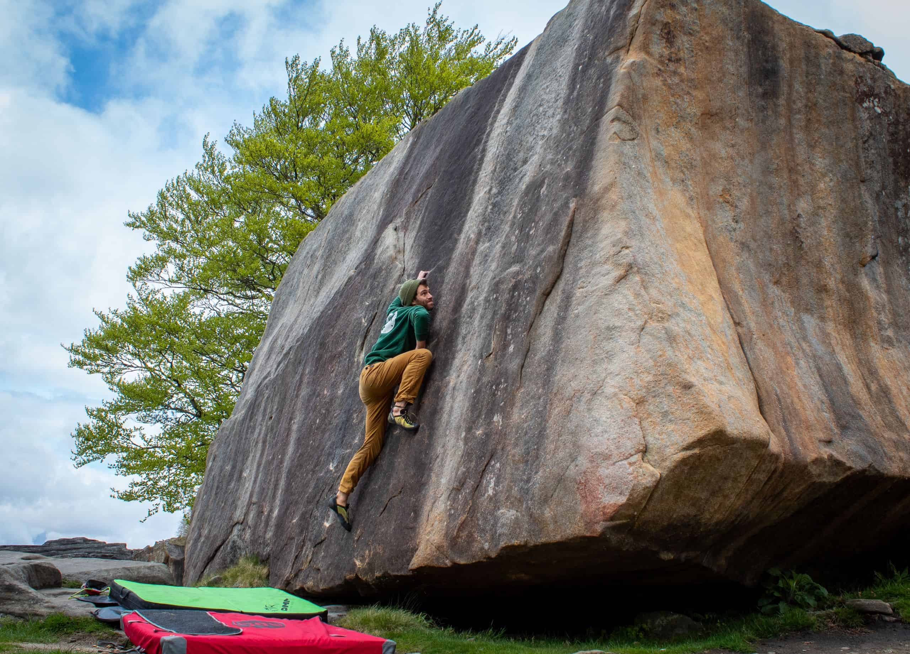
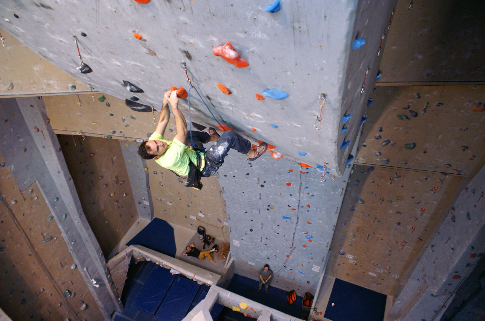
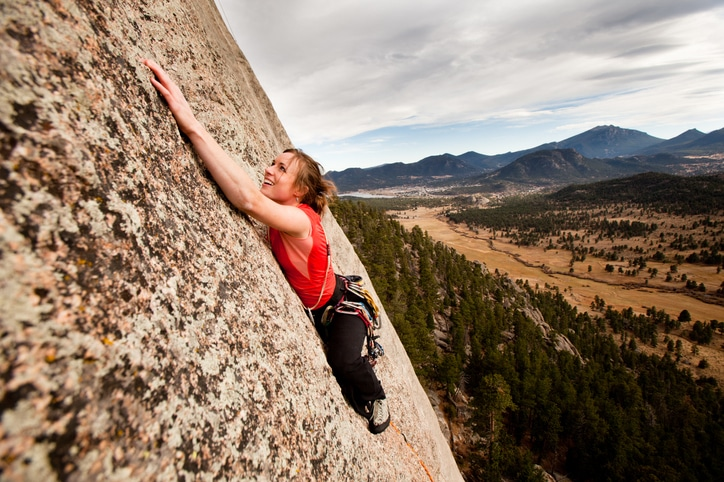

History
There are early documented examples of people "rock climbing" to achieve various objectives. The Le Quart Livre records that in 1492, ordered by his king, Antoine de Ville used castle siege tactics to ascend Mont Aiguille, a 300-meter rock tower, near Grenoble, France. In 1695, Martin Martin described the traditional practice of fowling by climbing with the use of ropes in the Hebrides of Scotland, especially on St Kilda.
The first ascent of Mont Blanc in 1786, started mountaineering's "modern era"; however it would take another century until the fixed anchors of rock climbing appeared, including pitons, bolts, and rappel slings. By the early 19th-century, "alpine rock climbing" was developing as a pastime; the tools of the alpine shepherd guides (early mountain guides), the alpenstock and woodcutter's axe (later combined as the ice axe).
Types of Climbing
Bouldering is a form of rock climbing that is performed on small rock formations or artificial rock walls without the use of ropes or harnesses.
Top roping is a form of rock climbing where the climber is securely attached to a climbing rope that runs through a fixed anchor at the top of the climbing route, and back down to the belayer at the base of the climb.
Lead climbing is a technique in rock climbing where the lead climber clips their climbing rope to the climbing protection as they ascend a pitch of the climbing route, while their belayer remains at the base of the pitch belaying the rope to protect the lead climber in the event that they fall.
Trad climbing is a type of free climbing in the sport of rock climbing where the lead climber places temporary and removable protection while simultaneously ascending the route.
  
Essential Gear
- Climbing Shoes
- Designed to increase the friction, and thus the grip, between the foot and the climbing surface with a vulcanized rubber sole.
- Climbing Chalk
- Widely used by rock climbers to help absorb moisture on their hands; the chalk is kept in a chalk bag that is hung around the waist area.
- Ropes
- Modern climbing ropes are 50 to 80 metres in length and have a kernmantle construction consisting of a core kern of twisted nylon fibers and an outer sheath mantle of woven colored coarse nylon fibers.
- Quickdraws
- Used by climbers to connect ropes to fixed points such as bolted anchors in sport climbing, or protection devices in traditional climbing.
Resources
Learn more from these pages:
Climber Adam Ondra
Climber Janja Garnbret
Climber Alex Honnold
Red Bull Twiki
Source